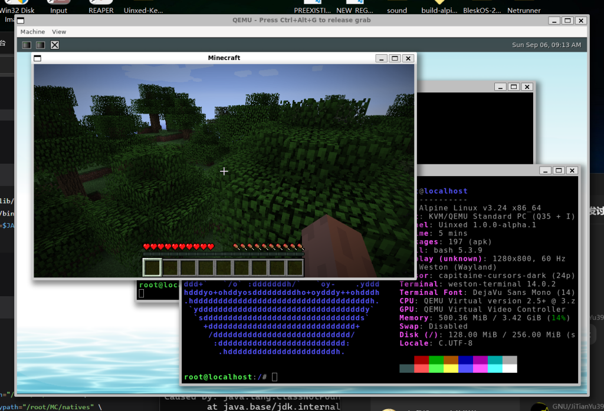

A UNIX-like kernel for x86-64, written from scratch.
Uinxed is a monolithic kernel written in C. It boots on bare metal and in virtual machines, and implements the Linux syscall ABI so that real Linux userspace can run on top of it.

What’s inside
A practical, self-contained kernel built on modern design principles — from the bootloader up to userspace.
-
Limine boot & SMP
Boots through the Limine bootloader in both UEFI and Legacy BIOS mode, and brings up every CPU core.
-
EEVDF scheduler
Per-CPU runqueues with SMP load balancing, and Priority Inheritance for robust mutex and futex semantics.
-
Memory management
Higher-half direct map, a unified page cache with LRU reclaim, writeback and readahead, and swap.
-
Linux compatibility
Follows the Linux x86-64 syscall ABI, enough to boot Alpine Linux and an Xfce desktop.
-
Filesystems & networking
A UNIX-style VFS with FAT, ext2/3/4, NTFS and ISO 9660, plus its own IPv4/IPv6 TCP/UDP stack.
-
Real hardware
Drivers for storage, USB, input, audio, display and network devices. Runs in QEMU and on physical machines.
Try it in QEMU
Uinxed is still experimental, so a virtual machine is the best place to start. Booting on real hardware is covered in the README.
Read the full guide-
1. Install the toolchain
sudo apt install make gcc xorriso qemu-system-x86On Debian or Ubuntu. GCC 13.3 or newer is recommended.
-
2. Build and boot
git clone https://github.com/ViudiraTech/Uinxed-Kernel.git cd Uinxed-Kernel make run -j$(nproc)This builds a bootable ISO and starts it in QEMU, with serial output in your terminal.
-
璇了又璇
-
azhzx
-
beanflame
-
星宇
-
我是小猴子
-
湖岸山川
-
LeonMMcoset